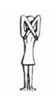

Rune Grimoire
Mannaz
Modern Relevance
Mannaz represents the self and the need for stewardship of one's own needs to better serve humanity. It calls for self-care, reflection, and authentic connection with others.
Tree, Element, and Deity
Tree: holly
Element: air
Deity: Heimdall/Odin/Frigg
Meaning: humankind, humanity
Names Across Dialects
| Dialect | Word | Meaning |
|---|---|---|
| Proto-Germanic | mannaz | Human |
| Gothic | manna | Man, human |
| Old English | mann | Man, human |
| Old Norse | madhr | A man, human being |
| Icelandic | Maður | Man, human |
| Norwegian | Madr | Man, human |
Phonetic value: m
Esoteric interpretation: the divine ancestor and sky father
Ideographic interpretation: marriage between heaven and earth
The Divine Structure in Humanity
Mannaz is the mystery of the divine (archetypal) structure in every individual and in humankind in general. This structure is imparted by the god Heimdallr as the progenitor of humanity. This is described in the Rigsthula of the Elder Edda. In this poem it is told how Rigr (Heimdallr) engendered the archetypal members of the three social functions in the world of mortals: the Provider, the Warrior, and the Priest-King, which reflect the three levels of the divine structure. Heimdallr is indeed Odin in one of his many guises, that of the All-Father (Alfadhir).
The M-rune is the symbol of Heimdallr as the genetic link between the gods and mortals, and as the guardian of Bifröst.
The Progeny of the Gods
This is the rune that describes the Germanic peoples as being descended from their divine order and defines humankind as the progeny of the gods. It is the mystery of humanity and represents the runic structure in the soul.
Mannaz is the power of human intelligence, rationality, memory, and tradition.
The Perfected Being and the Androgyne
It is the stave of the "perfected being": the complete human, an initiate in one of the many cults of the Elder Faith. Mannaz is an androgynous archetypal being, and therefore the mystery is one that embodies the power of the androgyne in the psychological sphere of humanity.
The M-rune stands for the institution of blood brotherhood.
Rune Character
Rune of logic and the left side of the brain. Used for enhancing intellect and strengthening the memory. Helps one to gain more knowledge of oneself, which is essential in working magick.
Crystal Pairings
- Amethyst is the stone used with this rune
Keywords
- Divine structure
- Divine link
- Intelligence
- Androgyne
- Initiate
Galdr
mannaz mannaz mannaz
mu ma mi me mo
mun man min men mon
um am im em om
mon men min man mun
Stadha
I. Stand erect with elbows lifted straight up and forearms crossed in front of the face or behind the head.
II. Use the elder Z-rune stadha, which is used as the younger M-stave madhr.
In both cases the stadha will increase the power of the head (hvel).

Magickal Workings
- Realization of the divine structure in humankind
- Increase in intelligence, memory, and mental powers generally
- Balancing the "poles of personality"
- Unlocking the hugauga, the "mind's eye"
- Enhancing intellect and strengthening memory
- Gaining self-knowledge essential for magick
Constructive Applications
Rune of logic and the left side of the brain. Used for enhancing intellect and strengthening the memory. Helps one gain more knowledge of oneself, which is essential in working magick.
Stadhagaldr Rites
Increase in Magickal Power
Mannaz opens this rite, unfettering the flow of godly might within the vitki:
Mannaz, unfetter the flow of godly might in me.
See Stadhagaldr (Posture Magick) for the full rite.
Success and Victory
Mannaz calls upon the word of fullness:
Mannaz! Word of fullness be the fulfiller of my wishes.
See Stadhagaldr (Posture Magick) for the full rite.
Rite of Need
Mannaz unfetters the flow of rune-might to fulfill the vitki's needs:
Mannaz! Word of fullness
be the fulfiller of my needs
and unfetter the flow of rune-might.
See Stadhagaldr (Posture Magick) for the full rite.